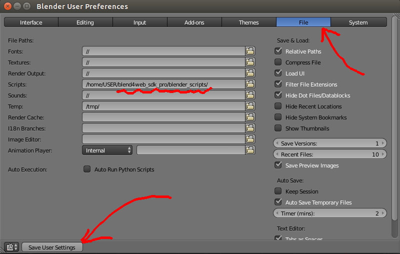
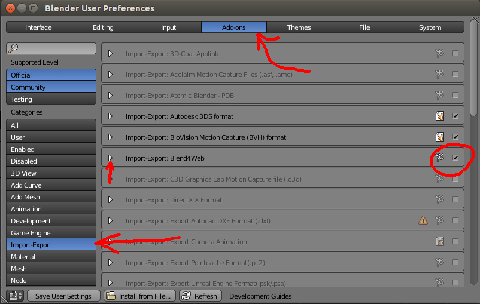

Installing the SDK¶
Setting up the development environment suits 3D application developers. To familiarize yourself with the Blend4Web addon quick install can be a better option.
You will need the engine distribution, a WebGL-capable browser and Blender.
Unpacking the Distribution¶
Stable versions of the distribution are available as an archive (blend4web_sdk_free_YY_MM.zip – free SDK, blend4web_sdk_pro_YY_MM.zip – commercial SDK). Simply unpack this archive somewhere.
Setting up the Addon¶
Note
We strongly recommend to remove the addon first if it was originally installed using quick install.
Run Blender, load the default scene File > New (hot keys Ctrl-N). Open the user preferences window File > User Preferences... (hot keys Ctrl-Alt-U). Under the File tab in the Scripts field, choose the path to the blender_scripts directory.
{kind=link}
Click Save User Settings and restart Blender.
Note
Instead of this it’s possible to copy the scripts directory blender_scripts/addons/blend4web to the already used directory for scripts or even to the installation directory, for example:
C:\Program Files\Blender Foundation\Blender\2.70\scripts\addons\blend4web.
Again load the default scene, open the user preferences window, go to the Addons tab and choose the Import-Export category. Enable the Import-Export: Blend4Web checkbox.
{kind=link}
Expand the addon panel and specify the “Path to Blend4Web SDK”. Here you can also change the port number to be used to run the development server (6687 by default).

Click Save User Settings. Restarting Blender isn’t required.
To check:
In the File > Export menu the Blend4Web (.json) and Blend4Web (.html) options should appear. Also the operators should appear in the search box when searching for “B4W” (hot key SPACE).
Local Development Server¶
To start the server, go to the Render tab and press the Start button on the Blend4Web panel:

Note
If the path to the Blend4Web SDK is not specified, the local development server cannot be launched. In this case the corresponding message will be displayed instead of the Start button.
If the server is failed to run, an error message will be shown describing the reason:

Press the Open SDK button to open the index web page of the Blend4Web SDK in the browser. This page is available at http://localhost:6687.

As a result, the default browser for your operating system will be launched.
The server can be stopped by pressing the Stop button. It is also stopped when Blender is closed.
Running Viewer and Demos¶
The index page contains links for launching the scene viewer and the demo applications. A WebGL-capable browser is required to run these apps.

Note
If the SDK apps are not displayed correctly, or error messages are shown, follow the instructions in the Problems Upon Startup section.